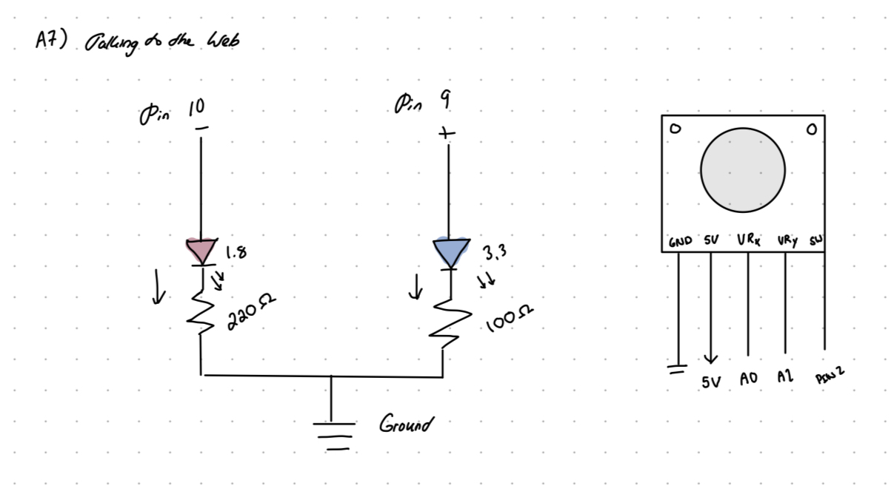
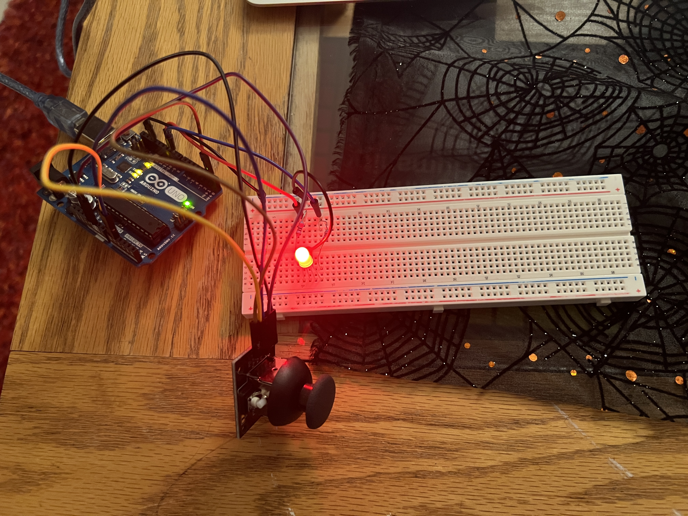

Here is the schematic for my circuit. It combines a RGB LED with a joystick module to communicate with the web through p5.js. AnalogRead will read values from the joystick module in the x and y directions, ranging from 0-1023. I got these numbers from this datasheet, as this was the first time I've used a joystick module. https://components101.com/sites/default/files/component_datasheet/Joystick%20Module.pdf The RGB LED will take in values from 0-255 for blue and red, it's not connected to green because I didn't use that color for the image result.

Here is the completed circuit. This project has a bidirectional flow of communication between the Aruino and the p5.js script. The canvas is displayed as a horizontal gradient from red to blue (see title image). The user can scroll across the screen with their mouse to produce different hues from the RBG LED. For example, scrolling all the way to the right will result in pure blue, and pure red all the way to the left. You can move your mouse around the middle of the canvas to get colors somewhere in the middle (pinks and purples). Then, using the joystick, you can draw a kaleidescope pattern on the canvas. The color of the lines you draw is determined by your mouse position, which correlates to the color of the LED. So if you want to draw a line with purple, you can move your mouse somewhere towards the middle of the canvas, and use your joystick to draw a design.
// Connect blue LED to pin 9
int bluePin = 9;
// Connect red LED to pin 10
int redPin = 10;
void setup() {
// Initalize serial communication
Serial.begin(9600);
// Set pin 9 and 10 as output
pinMode(bluePin, OUTPUT);
pinMode(redPin, OUTPUT);
}
void loop() {
// Check if there is serial communication
if (Serial.available() > 0) {
// save the value read from p5 as blue variable
int blue = Serial.parseInt();
// double check to ensure the value is within the accepted LED value of 0 -255
blue = constrain(blue, 0, 255);
// set red to reduce when blue increases, and increase when blue decreases
int red = 255 - blue;
// analog write blue to blue pin and calculated red value to red pin
analogWrite(bluePin, blue);
analogWrite(redPin, red);
}
// Send a string to P5 containing the x and y coordinate readings from the joystick
Serial.print(analogRead(A0));
Serial.print(",");
Serial.print(analogRead(A1));
Serial.println();
// delay 50 ms
delay(50);
}
// Sources:
// 1. p5.js Linear Gradient Example
// https://editor.p5js.org/p5/sketches/Color:_Linear_Gradient
// 2. p5.js Kaleidoscope Example
// https://p5js.org/examples/repetition-kaleidoscope/
// 3. Writing to servo motor example provided by Blair in class
// create variables for the two colors for the gradient, as well as the value of blue to send to the arduino
let c1, c2, mouseBlue;
// Set a baud rate of 9600 for serial communication
const BAUD_RATE = 9600;
// Create a variable for the serial port
let port;
// Create a variable for the connect button
let connectBtn;
// Symmetry variable to assist with the kaleidoscope effect
let symmetry = 6;
// variable to store the angle based on the symmetry
let angle = 360 / symmetry;
// variable to store the previous joystick x position
let prevx = 0;
// variable to store the previous joystick y position
let prevy = 0;
// variable to store the current joystick x position
let x = 0;
// variable to store the current joystick y position
let y = 0;
// Setup function to create canvas and begin serial communication
function setup() {
// Set the canvas to the height and width of browser window
createCanvas(windowWidth, windowHeight);
// center the canvas
rectMode(CENTER);
// set up serial communiation by calling the setupSerial function
setupSerial();
// Set c1 as pure blue
c1 = color(0, 0, 255);
// Set c2 as pure red
c2 = color(255, 0, 0);
//convert angle to degrees instead of radians
angleMode(DEGREES);
// Call the setGradient function to create the background gradient with red and blue
setGradient(0, 0, width, height, c2, c1);
}
// main draw function that loops continuously
function draw() {
// if the port is not open, return and exit draw loop
if (!checkPort()) return;
// read a string from the serial port until there is a newline
let str = port.readUntil("\n");
// if string is empty, return and exit draw loop
if (str.length == 0) return;
// map the mouse position on the x axis to a value between 0 and 255 to translate to teh LED
mouseBlue = map(mouseX, 0, windowWidth, 0, 255);
// constrain the blue value between 0 and 255
mouseBlue = constrain(mouseBlue, 0, 255);
// convert to integer
mouseBlue = int(mouseBlue);
// if the port is opened, send the blue value to the arduino via serial communication
if (port && port.opened()) {
port.write(mouseBlue + "\n");
}
// set previous x and y variables to current current values
prevx = x;
prevy = y;
// create an array to represent the joystick values by splitting the input string from the arduino at the comma
let joystickArray = str.trim().split(",");
// map the joystick values from (0-1023) to the browser window width and height, and round to a whole numebr
x = round(map(Number(joystickArray[0]), 0, 1023, 0, windowWidth));
y = round(map(Number(joystickArray[1]), 0, 1023, 0, windowHeight));
// translate to the center of the canvas
translate(width / 2, height / 2);
// Check if the joystick value is within the canvas boundaries
if (x > 0 && x < width && y > 0 && y < height) {
// Create a variable for the line end positions for each axis based on current joystick coordinates
let lineStartX = x - width / 2;
let lineStartY = y - height / 2;
// Create a variable for the line end positions for each axis based on the previous joystick coordinates
let lineEndX = prevx - width / 2;
let lineEndY = prevy - height / 2;
// Loop based on the symmetry value
for (let i = 0; i < symmetry; i++) {
// rorate based on angle input
rotate(angle);
// Set the stroke color based on the position of the mouse on the x axis
stroke(255 - mouseBlue, 0, mouseBlue );
// Set line thickness
strokeWeight(3);
// draw a line based on the previously calculated coordinates
line(lineStartX, lineStartY, lineEndX, lineEndY);
// save the mirrored drawing
push();
// invert the axis to create the kaleidoscope effect
scale(1, -1);
// draw line based on inverted values
line(lineStartX, lineStartY, lineEndX, lineEndY);
pop();
}
}
}
// Function from p5.js examples to create a gradient background, taking in x, y, width, height, 2 colors, and axis
function setGradient(x, y, w, h, c1, c2) {
noFill();
// loop over the width of the canvas, starting at the given x courdinate and ending with width
for (let i = x; i <= x + w; i++) {
// map the current x coordinate to a number between 0 to 1
let inter = map(i, x, x + w, 0, 1);
// lerpcolor function allows for blending between the 2 colors to create the gradient effect
// Assign this blended color to a new variable called c
let c = lerpColor(c1, c2, inter);
// set stroke to the new blended color
stroke(c);
// create a line from given x coordinate all the way up the height of the canvas
line(i, y, i, y + h);
}
}
// Function to set up a serial connection between arduino and p5
function setupSerial() {
// create a serial port
port = createSerial();
// Check for used ports
let usedPorts = usedSerialPorts();
// if there are ports, open the first port in the array
if (usedPorts.length > 0) {
port.open(usedPorts[0], BAUD_RATE);
}
// create a connect button
connectBtn = createButton("Connect to Arduino");
// create button in upper left corner
connectBtn.position(5, 5);
connectBtn.mouseClicked(onConnectButtonClicked);
}
// Function that returns true or false depending on if the port is opened
function checkPort() {
if (!port.opened()) {
// If port is closed, add a button that says "connect to Arduino"
connectBtn.html("Connect to Arduino");
// return false
return false;
} else {
// Otherwise, change the button to say "disconnect"
connectBtn.html("Disconnect");
return true;
}
}
// Function to set up "connect to arduino" button
function onConnectButtonClicked() {
// When the connect button is clicked
if (!port.opened()) {
// Open port with given baud rate
port.open(BAUD_RATE);
} else {
// If not open, close
port.close();
}
}
AI Use Statement
I used ChatGPT to help debug my code.
Prompt: Can you help me understand what parts of my code are causing errors.
Response:
✅ 1. Your mouseBlue value is calculated before x is updated
In your code:
mouseBlue = map(x, 0, windowWidth, 0, 255);
But at this moment, x is still the old value — because you update x after reading serial later.
👉 Fix: move this block AFTER you update x and y from serial:
let joystickArray = str.trim().split(",");
x = round(map(Number(joystickArray[0]), 0, 255, 0, windowWidth));
y = round(map(Number(joystickArray[1]), 0, 255, 0, windowHeight));
mouseBlue = map(x, 0, width, 0, 255);
mouseBlue = constrain(mouseBlue, 0, 255);
mouseBlue = int(mouseBlue);
Otherwise the servo will always lag by one frame or stay at 0.
❌ 2. Your prevx/prevy assignment is still in the wrong place
Currently you do:
prevx = x;
prevy = y;
let str = port.readUntil()
...
x = new value
y = new value
This makes prevx == x every frame → you draw zero-length lines → no mirrored drawing appears.
👉 Fix: move prevx/prevy right BEFORE updating x and y:
let joystickArray = str.trim().split(",");
// save old position BEFORE writing new values
prevx = x;
prevy = y;
x = round(map(Number(joystickArray[0]), 0, 255, 0, windowWidth));
y = round(map(Number(joystickArray[1]), 0, 255, 0, windowHeight));
This is the #1 reason your drawing is invisible.
❌ 3. You read serial BEFORE checking if port is open
This line runs even when port is closed:
let str = port.readUntil("\n");
When port is not connected, readUntil() returns empty string → your whole draw exits early → nothing is drawn.
👉 Fix: check the port FIRST, then read:
if (!checkPort()) return;
let str = port.readUntil("\n");
if (str.length == 0) return;
AI Reflection
AI was extremely helpful for me during this assignment, as it allowed me to do some cool things with my project that we hadn't learned in class.
It also helped me interpret some of the example code provided in the p5.js documentation. I was sure that I understood all the tips it gave me.
I didn't use much of the code it gave me, it was mostly a matter of rearranging what I had written myself and combining that with the example.